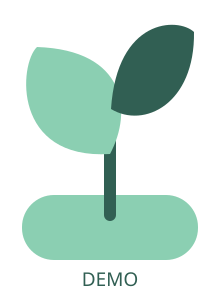

ミント管理 現行の構成を使った体験デモ
すべて架空のデータです操作はこの画面内だけに反映します。実際のHPへの更新、投稿や送信、ログインは行いません。再読み込みすると初期状態に戻ります。
リクエスト受付受付中（デモ）
届いたリクエスト（新しい順）
- デモのリクエスト / ミントさん
星の帰り道 / サンプル歌手
次の歌枠で聴けたらうれしいです！
- デモのリクエスト / お名前なし
ミント色の朝 / サンプル歌手
いつも楽しく聴いています。
曲名・アーティスト・文章は架空です。対応済みの切り替えを試せます。
メッセージ受付受付中（デモ）
届いたメッセージ（新しい順）
- デモの匿名メッセージ
昨日の配信、楽しかったです！また歌枠を楽しみにしています。
- デモの匿名メッセージ
次はどんなゲームをする予定ですか？
実際に届いたメッセージは表示していません。返信や投稿は行いません。
リンクの一覧に追加する操作例です。Xの投稿は取得・送信しません。
デモに載せているポスト
1行に1曲。「曲名 / アーティスト」の形で入力します。デモには個人情報を入力しないでください。
デモに載っている曲
選んだ日から7日分の予定表になります。
実際のHPへの反映は行いません。
ごほうび壁紙を作る画面の簡易操作例です。現行の全設定・画像保存機能を再現したものではありません。

いつもありがとう♡
HPに表示する例
サンプル記念配信
この画面内だけの表示例です。実際のHPには反映しません。
機能と画面構成はしぃ管理をもとにしています。デモでは操作を一部簡略化しています。実際の認証・データ保存・外部連携は、ご依頼内容に合わせて設計します。